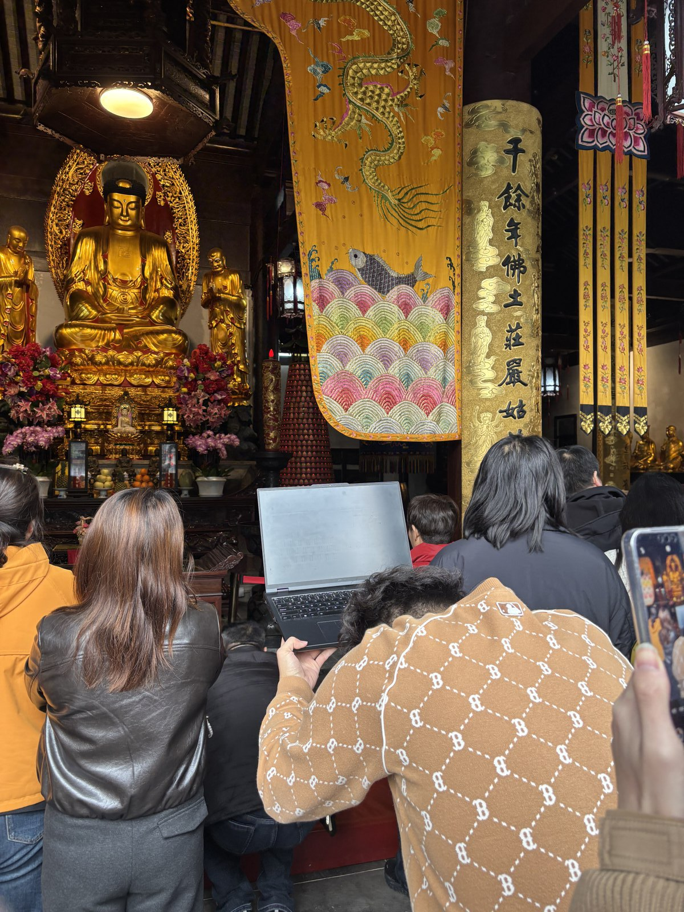
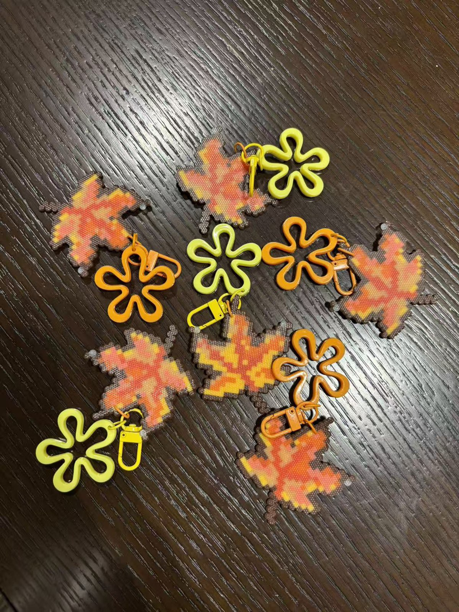

Team Member
Shuobai Chen
Student ID: 2362870
Team
This page keeps the confirmed local team information visible and avoids adding unsupported contribution claims. The detailed contribution table remains on the Implementation page.
Team Member
Student ID: 2362870

Team Member
Student ID: 2362202

Team Member
Student ID: 2363276
Team Member
Student ID: 2362068
Team Building

Blessing Moment
The webpage has been blessed. We wish all users good health and success in everything.

Handmade Artifact
Maple-leaf souvenirs made as a small physical memory of the project and the team process.